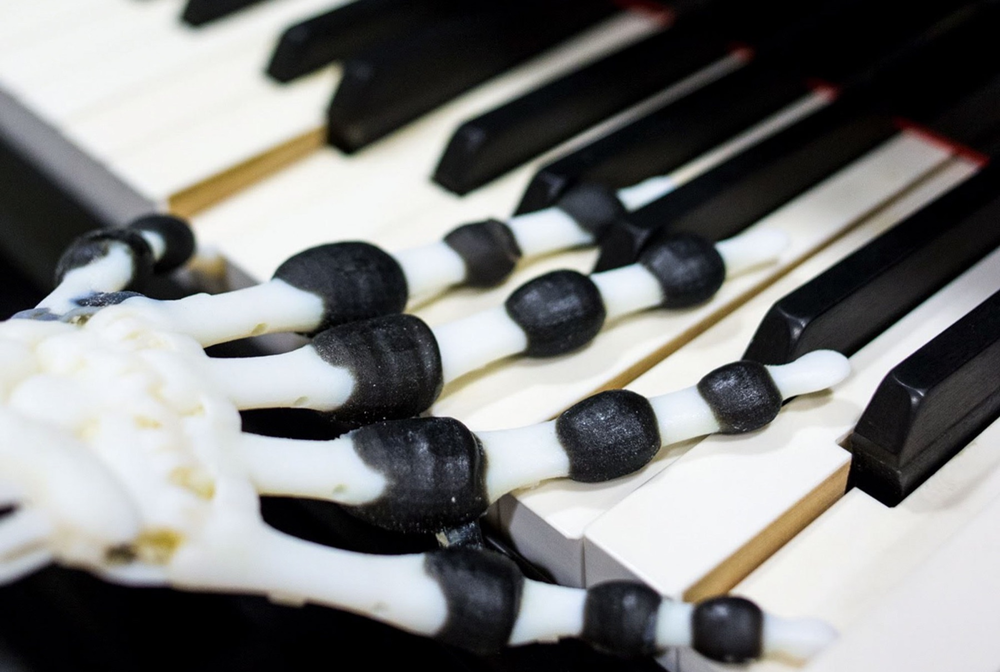
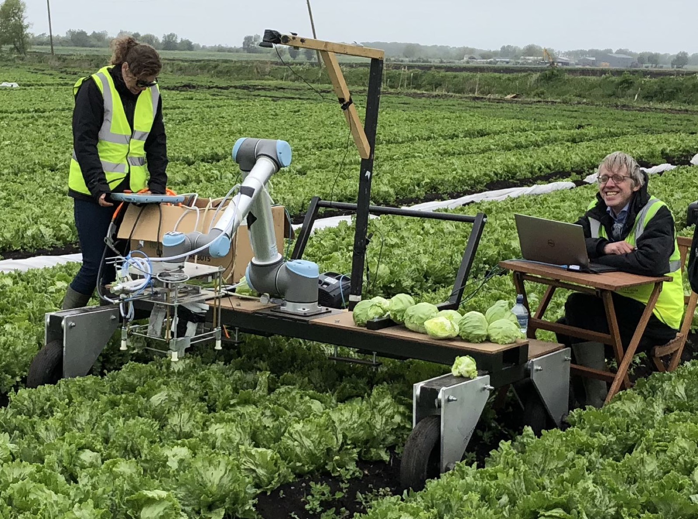

Materials / Morphology / Control
Soft
Robotics
Adaptive machines built from compliant materials. We investigate how softness changes what robots can do, how they move, and how safely they interact.

The University of Tokyo × University of Cambridge / Bio-Inspired Robotics Laboratory
We build robots that learn from nature—not by copying how it looks, but by discovering how bodies, materials, and environments create intelligent behaviour.

01 / 03Material intelligence01 — Research
BIRLab works at the intersection of robotics, biology, and materials science. Our focus is on bodies that can sense, adapt, and act with the world around them.
Materials / Morphology / Control
Adaptive machines built from compliant materials. We investigate how softness changes what robots can do, how they move, and how safely they interact.
Touch / Perception / E-skins
Electrical impedance tomography turns stretchable, continuous materials into large-area tactile sensors—giving soft bodies a spatial sense of touch.

Hands / Grippers / Food
From delicate produce to everyday objects, we develop adaptive hands and manipulation strategies for contact-rich, unpredictable tasks.

02 — Featured event
Annual / Online / Worldwide
18—20 March 2026
A global meeting place for the science of intelligence in physical systems.
EI brings together robotics, materials, biology, computation, and design. Three days of masterclasses, research talks, and conversations across time zones.
03 — Robot gallery
Selected machines and experiments from the BIRLab archive. Tap any image to look closer.
Watch the research move
Robotics makes more sense when it moves. Watch field trials, prototypes, lectures, and experiments from across the lab.
Visit the channel04 — Project archive
Search projects by title, theme, or era. The archive spans research in sensing, manipulation, locomotion, and autonomous experimentation.
23 projects
Task-driven information selection for tactile perception.
Adaptive robotic handling in challenging food environments.
High-density contact sensing with flexible electrode placement.
An international forum for embodied intelligence research.
Musculoskeletal design for dexterous, human-like manipulation.
Large-scale automated physical experimentation.
Robotics for delicate and demanding agricultural work.
Autonomous design and fabrication for adaptable machines.
Robust vision, gripping, and warehouse manipulation.
Mechanisms for robotic growth and morphological change.
Elastic mechanisms for hopping, walking, and running.
Adhesive locomotion across complex vertical environments.
Variable stiffness and damping for versatile movement.
Low-energy body support for standing and industrial assistance.
Underactuated walking through steps and uneven ground.
Mechanical design for efficient rough-terrain traversal.
Compliant bipeds as physical models of human walking.
How perception, control, and physical dynamics shape one another.
Behavioural diversity from material properties and simple actuation.
Musculoskeletal design for fast four-legged movement.
Behavioural diversity through morphology and minimal control.
Animal-inspired omnidirectional vision for learning and navigation.
Artificial muscles and expression for human–robot communication.
No projects match your search.
Open the original BIRLab research archiveX. Xu, D. Hardman & F. Iida
Read ↗ 2026 / IEEE Robotics and Automation PracticeH. Wang, H. Kunz, T. Adler & F. Iida
Read ↗ 2026 / Bioinspiration & BiomimeticsC. Laschi, L. Wen, F. Iida et al.
Read ↗ 2025 / Science RoboticsK. Gilday, C. Sirithunge, F. Iida & J. Hughes
Read ↗06 — Latest news
07 — People / Join us
BIRL connects researchers across Tokyo and Cambridge around a shared question: how can intelligence emerge through bodies, materials, and interaction?
Meet the peopleDepartment of Precision Engineering
Department of Engineering